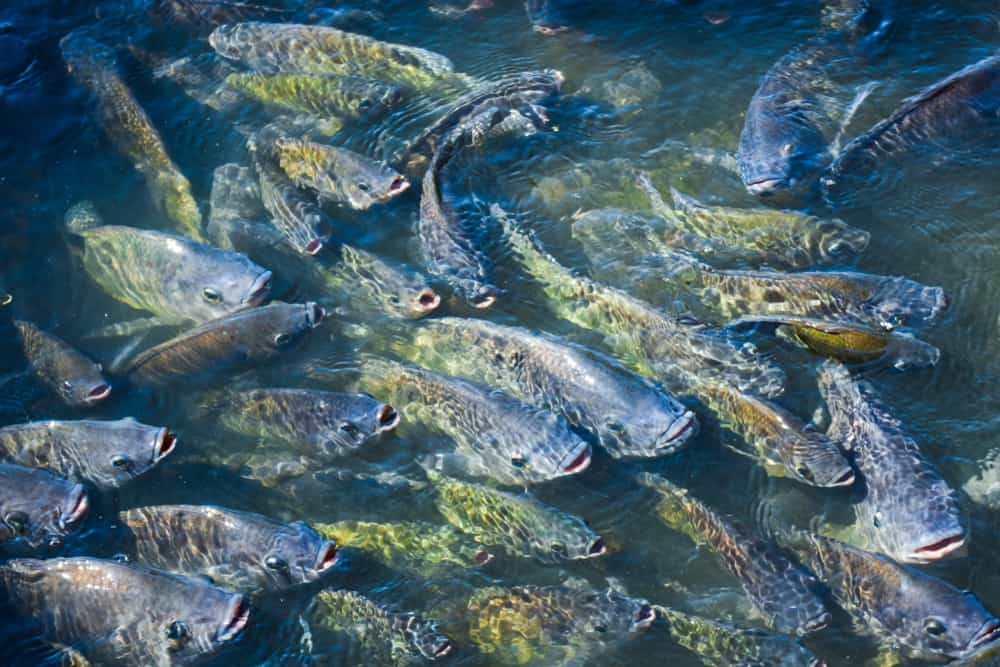

Kokopo Business College Fish Farming or pisciculture involves commercial breeding of fish, most often for food, in fish tanks or artificial enclosures such as fish ponds. It is a particular type of aquaculture, which is the controlled cultivation and harvesting of aquatic animals such as fish, crustaceans, molluscs and so on, in natural or pseudo-natural environments.
